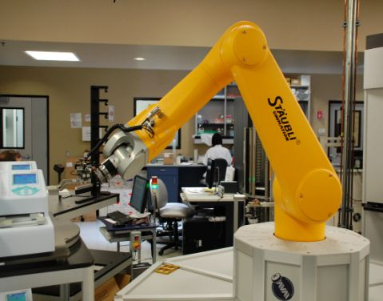
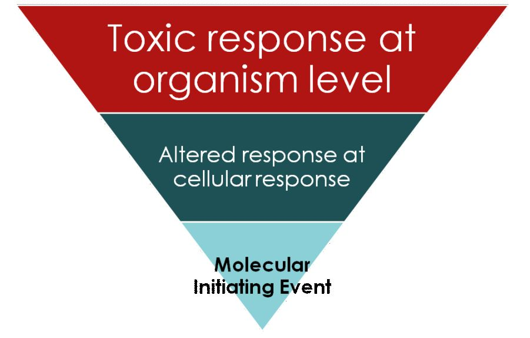
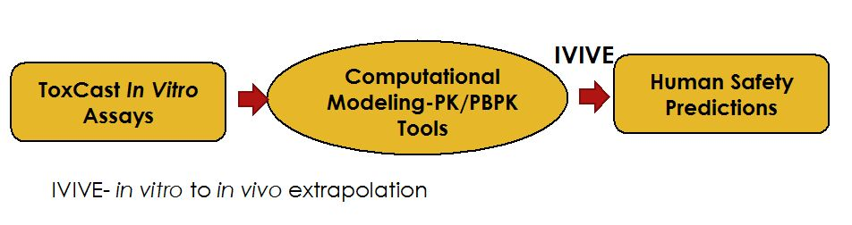

Topic 3: Tools and Technologies in Systems Toxicology
LEARNING OBJECTIVES
After completing this lesson, you will be able to:
After completing this lesson, you will be able to:
- Understand tools and technologies used in systems toxicology, the concept of adverse effects and Adverse Outcome Pathways.
Tools and Technologies
- Tools at molecular level: Omics technologies such as genomics, protemics, metabolomics.
- Tools at cellular level include highly refined high-throughput in vitro model systems.
- Modeling softwares that can utilize in vitro data and mathematically translate that into relevant in vivo information utilizing pharmacokinetic (PK) or physiologically based pharmacokinetic models (PBPK). This is known as in vitro to in vivo extrapolation (IVIVE).
- Modeling softwares that can perform sophisticated species scaling (prediction of human parameters from non clinical species such as rat, dog, monkey etc.).
- Risk assessment and exposure modeling tools that enable calculation of hazard and risk in populations on a whole and specific subpopulations.
Toxicity Testing in Chemicals Vs. Pharmaceuticals
- Regulatory based toxicity testing is different for pharmaceutical based compounds versus chemical and agrochemical compounds.
- Non clinical safety assessment for phamaceutical products is governed by the different stages of drug development while the toxicological data requirement for chemicals/agrochemicals is based on the amount (tonnage) produced.
- While most pharmaceutical compounds undergo extensive animal toxicity testing, there are thousands of chemicals in commerce today that have undergone very limited or non toxicity testing. In order to address this several governmental mandates are being put into action.
Government Initiatives and Mandates for 21st Century Toxicity Testing
- In Europe the Registration Evaluation Authorization and Restriction of Chemicals (REACH) was initially implemented in 2007.
- This substancially altered the safety testing performed on new as well as existing chemicals.
- In The United States too several initiatives to increase safety testing on more and more chemicals are underway which would increase the cost of safety assessments astronomically.
- The regulations under REACH have been directly estimated to cost the industry more than 4.2 billion dollars (Brown, 2003).
Brown, V. J. (2003). REACHing for chemical safety. Environ. Health Perspect. 111, A766–A769.
21st Century Toxcity Testing
- Traditional toxicity testing involves the use of a lot of animals and is an extremely expensive and time consuming process.
- In order to address the large number of untested chemicals the US Environmental Protection Agency (EPA) initiated the ToxCast program.
- The ToxCast Program is a high-throughput screening program that would enable the prioritization of chemicals so that resources can be channelized towards those chemicals that possess the greatest risk to human safety.
The ToxCast Program
- The ToxCast program developed and utilized automated in vitro assays ( to test effects of chemicals on various biological processes using living cells, isolated proteins etc.).
- The assay designs included endpoints such as cytotoxicity, enzyme activity, endocrine endpoints, gene expression etc.
- A total of approximately 600 endpoints were evaluated.
|

Figure 1. National Institute of Environmental Health Sciences – NIH, 50th Anniversary
|
The Overall Perspective
- In vitro assays may be relevant in the light of the fact that overall disesase/toxicology processes are actually mediated by molecular and cellular perturbations.
- However, the overall picture at the whole organism level includes several other complex factors such as pharmacokinectics of the compound, metabolism, clearance etc.
- This gap could be filled by utilizing computational modeling tools that would utilize the in vitro data and integrate them into human physiology with the help of pharmacokinetic (PK) or physiologically based pharmacokinetic models (PBPK).
Understanding the concept of effects Vs. adverse Effects
In order to conduct safety assessments it is important to understand the concept of “adverse effects” versus simply “effects”. It is also important to understand the significance of biological relevance of isolated in vitro, molecular assays as it pertains to the whole organism
Adverse Outcome Pathways (AOPs) have been developed to try and link the causal molecular initiating event to a host of intermediate processes at the cellular level that finally leads to adverse outcome (AO) in the whole organism that can be used for safety assessment purposes
Adverse Outcome Pathways (AOPs) have been developed to try and link the causal molecular initiating event to a host of intermediate processes at the cellular level that finally leads to adverse outcome (AO) in the whole organism that can be used for safety assessment purposes
Adverse Outcome Pathways
- The AOP programme was launched by the Organization for Economic Co-operation and Development (OECD) in 2012. The objective was to link the main molecular initiating event with the phenotypic/functional toxicity/adverse effect at the organism level.

Figure 2. Adverse Outcome Pathways.
Using Systems Toxicology Approach For Toxicity Predictions
- The molecular initiating events could be used in selecting in vitro assays that could have possible potential for predicting toxicity at the whole organism level .

Figure 3. IVIVE- in vitro to in vivo extrapolation.
Topic 3: Key Points
In this section, we explored the following main points:
In this section, we explored the following main points:
- Tools and Technologies, used in the field of systems toxicology.
- Concept of Adverse effects and AOPs .